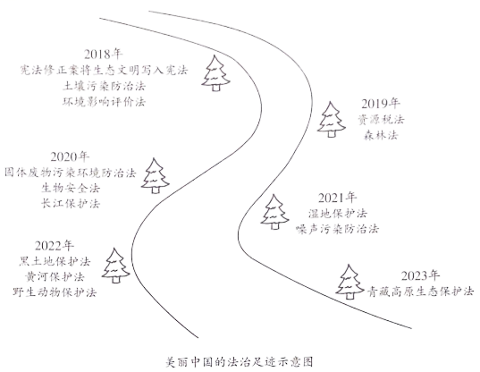

2023年北京中考道德与法治 第19题
19. 美丽中国的法治足迹。
近年来，我国先后制修订一系列生态环境保护法律。

时间镌刻不朽。今天，我国生态环境法治建设取得显著成效：河长制带来河长治，一幅幅鱼翔浅底、人水相亲的图画徐徐铺展；日益完善的湿地生态补偿制度，让保护生态不吃亏、能受益的局面渐成常态……美丽中国的法治足迹铺陈延伸，让祖国的天更蓝、山更绿、水更清。
（1）说明美丽中国 法治足迹中蕴含的道理。
法治足迹中蕴含的道理。
（2）青少年不仅是法治中国建设的受益者，更应该成为参与者和推动者。简要说明青少年能为美丽中国的法治建设做些什么。